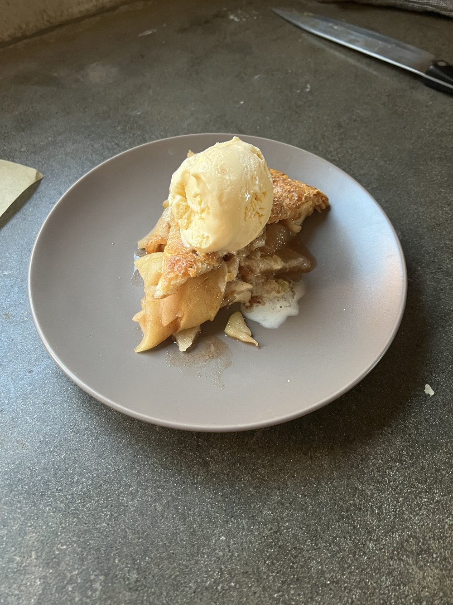

Apple Pie

Description
In this recipe, we will be making a deliciously sweet apple pie!
Original recipe by joshuacooksthendraws.
Ingredients
- 2 pie doughs
- 5 large Granny Smith apples
- 1/4 cup brown sugar
- 2 teaspoon ground cinnamon
- 1/2 teaspoon salt
- 1/4 teaspoon ground nutmeg
- 2 tablespoon flour
- 2 tablespoons unsalted butter
- 1 tablespoon lemon juice
- Egg wash
- Demerara/turbinado sugar
Steps
- Start by peeling 5 large apples. Then cut the apples into even slices, removing the core. Add your apples to a large bowl.
- Combine 1/4 cup granulated sugar, 1/4 cup brown sugar, 2 tsp cinnamon, 1/2 tsp salt and 2 tbs flour in a bowl. Mix them together. Sprinkle this over your sliced apples. Add 2 tbs melted unsalted butter and 1 tbs lemon juice to the apple as well and thoroughly give the apples a mix. Cover and store in the refrigerator overnight.
- The next day, the apples would have seeped out a good amount of liquids. Collect this liquid and pout it into a small saucepan. Heat over medium heat and bring the liquid to a simmer, stirring constantly. You want to reduce this liquid to half, which should take around 4-5 minutes. Return the liquid to the apples and mix.
- Preheat the oven to 350 degrees F.
- Roll out two pie doughs into a round (around 13 inches) and transfer one to a 9 inch pie dish. Add all of the apple filling along with all the juices. Place the second rolled out pie dough on top and trim and crimp the edges so that a strong seal forms. Brush the top of the pie with some egg wash and sprinkle demerara/turbinado sugar liberally on top. Make 3-4 cuts into the pie dough to function as vents.
- Bake the pie for 90-100 minutes. I place my pie on top of a baking sheet just in case some of the filling leaks out. You want the crust to be golden brown with the inside bubbling.
- Let the pie cool for around 2-4 hours. Then cut into it and enjoy!